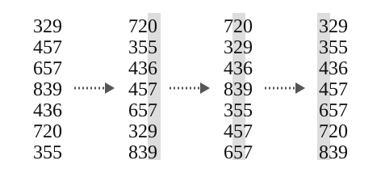

OI Wiki · prijevod · Osnove algoritamaOI Wiki · translation · Algorithm basics
Radix sortRadix sort
Sadržaj
Napomena
Ova stranica ne govori o counting sortu.
Ova stranica kratko predstavlja radix sort.
Definicija
Radix sort neusporedbeni je algoritam sortiranja, izvorno osmišljen za sortiranje bušenih kartica. Elemente koje treba sortirati rastavlja na \(k\) ključeva i sortiranjem po svakom ključu redom sortira sve elemente.
Ako se uspoređuje redom od \(1.\) do \(k.\) ključa, radix sort zove se MSD (Most Significant Digit first) radix sort;
ako se uspoređuje redom od \(k.\) do \(1.\) ključa, zove se LSD (Least Significant Digit first) radix sort.
Usporedba elemenata s k ključeva
Neka \(a_i\) označava \(i\)-ti ključ elementa \(a\).
Ako elementi imaju \(k\) ključeva, za dva elementa \(a\) i \(b\) zadani način usporedbe je:
- usporedi \(1.\) ključeve \(a_1\) i \(b_1\): ako je \(a_1 < b_1\), onda je \(a < b\); ako je \(a_1 > b_1\), onda je \(a > b\); ako je \(a_1 = b_1\), idi na sljedeći korak;
- usporedi \(2.\) ključeve \(a_2\) i \(b_2\): ako je \(a_2 < b_2\), onda je \(a < b\); ako je \(a_2 > b_2\), onda je \(a > b\); ako je \(a_2 = b_2\), idi na sljedeći korak;
- …
- usporedi \(k.\) ključeve \(a_k\) i \(b_k\): ako je \(a_k < b_k\), onda je \(a < b\); ako je \(a_k > b_k\), onda je \(a > b\); ako je \(a_k = b_k\), onda je \(a = b\).
Primjeri:
- pri usporedbi prirodnih brojeva, ako brojeve poravnamo po jedinicama i sprijeda nadopunimo nulama, \(i\)-ta znamenka slijeva može biti \(i\)-ti ključ;
- pri leksikografskoj usporedbi stringova \(i\)-ti znak slijeva može biti \(i\)-ti ključ;
- zadani način usporedbe
std::pairistd::tupleu C++-u isti je kao gore opisani.
MSD radix sort
Na temelju usporedbe elemenata s \(k\) ključeva nameće se ideja: najprije usporedimo \(1.\) ključeve svih elemenata i tako odredimo grubi odnos među elementima; zatim za elemente s jednakim \(1.\) ključem usporedimo \(2.\) ključeve… i tako dalje.
Budući da se uspoređuje redom od \(1.\) do \(k.\) ključa, algoritam izveden iz te ideje zove se MSD (Most Significant Digit first) radix sort.
Tijek algoritma
Elemente rastavimo na \(k\) ključeva; najprije stabilno sortiramo po \(1.\) ključu, zatim svaku grupu elemenata s jednakim ključem stabilno sortiramo po \(2.\) ključu (rekurzivno)… i na kraju svaku grupu elemenata s jednakim ključem stabilno sortiramo po \(k.\) ključu.
Radix sort obično smatramo stabilnim, pa i u MSD radix sortu za unutarnje sortiranje po ključu koristimo samo stabilan algoritam (obično counting sort).
Ispravnost slijedi iz gore opisane usporedbe elemenata s \(k\) ključeva.
Primjer koda
Sortiranje prirodnih brojeva
Slijedi rekurzivni MSD radix sort koji obrađuje najviše MAXN cijelih brojeva iz \([0,2^{32}-1]\). Početno je digit=10; pri promjeni baze treba uskladiti RADIX i powRADIX.
Primjer koda
constexpr unsigned MAXN = 1000; // Broj brojeva koje sortiramo
constexpr unsigned RADIX = 10; // Baza
constexpr unsigned powRADIX[10] = {1, 10, 100, 1000,
10000, 100000, 1000000, 10000000,
100000000, 1000000000}; // Potencije od RADIX
unsigned get_digit(unsigned value, int digit) // Izdvoji znamenku na mjestu digit
{
return (value / powRADIX[digit]) % RADIX;
}
void MSD_radix_sort(unsigned* begin, unsigned* end, int digit)
// Elementi u [begin,end) imaju (u bazi 10) jednake vodeće znamenke
// Treba sortirati samo posljednjih digit znamenki (mjesta digit-1 do 0)
// Primjer poziva: MSD_radix_sort(a,a+n,10)
{
if (begin >= end) // Prazan interval
{
return;
}
/** Counting sort (osobni stil, samo kao primjer) **/
static unsigned cnt[RADIX + 1],
tmp[MAXN + 5]; // Različite razine rekurzije ne koriste cnt i tmp istodobno
// (sljedeća se razina poziva tek kad trenutna završi), pa static
// štedi prostor
vector<unsigned> beg;
beg.resize(RADIX + 1); // Pristupi beg mogli bi se sukobiti, zato lokalna varijabla
for (int i = 0; i <= RADIX; i++) {
cnt[i] = beg[i] = 0; // Čišćenje je dobra navika
}
for (unsigned* it = begin; it != end; it++) // Brojanje
{
int bitVal = get_digit(*it, digit - 1);
cnt[bitVal] += 1;
}
beg[0] = 0; // Izračunaj početni položaj (pomak) za svaku znamenku
for (int i = 1; i <= RADIX; i++) {
beg[i] = beg[i - 1] + cnt[i - 1];
}
// beg[RADIX] računamo dodatno da bi raspon za i bio upravo [beg[i],beg[i+1])
// bez brige da beg[i+1] izađe izvan granica
for (int i = 0; i < RADIX; i++) {
cnt[i] = 0;
}
for (unsigned* it = begin; it != end; it++) // Rezultat counting sorta stavi u tmp
{
unsigned bitVal = get_digit(*it, digit - 1); // Izdvoji znamenku na mjestu digit - 1
// Prolazimo izvornim redom; ovo je (cnt[bitVal]+1)-ti element sa znamenkom bitVal na mjestu digit-1
tmp[beg[bitVal] + cnt[bitVal]] = *it;
cnt[bitVal]++;
}
for (unsigned* it = begin; it != end; it++) // Kopiraj tmp natrag u izvorni niz
{
*it = tmp[it - begin];
}
/** Rekurzivno sortiraj sljedeću znamenku u svakoj košari **/
if (digit == 1) // Već smo na najnižoj znamenki
{
return;
}
for (int i = 0; i < RADIX; i++) // Rekurzivno sortiraj sljedeću znamenku
{
MSD_radix_sort(begin + beg[i], begin + beg[i + 1], digit - 1);
}
}
Sortiranje stringova
Slijedi rekurzivni MSD radix sort koji leksikografski sortira std::string sastavljene samo od malih slova engleske abecede:
Primjer koda
constexpr int MAXN = 1000;
int get_digit(string* arr, int i, int dig) {
if (arr[i][dig] == '\0') return 0;
return arr[i][dig] - 'a' + 1;
}
void MSD_radix_sort_string_base(string* arr, int* begin, int* end,
int digit) // Glavna funkcija
// Sortira stringove sastavljene samo od malih slova
// Elementi u [begin,end) jednaki su na mjestima [0,digit)
// Sortiranje sada počinje od mjesta digit
// Primjer poziva: MSD_radix_sort_string(a, a + n)
// Gotovo isto kao prethodni kod, pa je komentara manje
// Radi uštede prostora i vremena sortiramo niz indeksa; i dalje uspoređujemo odgovarajući znak stringa
{
if (begin >= end) return;
static int tmp[MAXN + 5];
static int cnt[28];
vector<int> beg;
beg.resize(28);
// P: Zašto 28?
// O: 0 = kraj stringa, 1-26 = a-z, 27 = dodatno mjesto (protiv prekoračenja)
for (int i = 0; i < 28; i++) cnt[i] = beg[i] = 0;
for (int* it = begin; it != end; it++) cnt[get_digit(arr, *it, digit)] += 1;
beg[0] = 0;
for (int i = 1; i <= 27; i++) beg[i] = beg[i - 1] + cnt[i - 1];
for (int i = 0; i < 28; i++) cnt[i] = 0;
for (int* it = begin; it != end; it++) {
int bitVal = get_digit(arr, *it, digit);
tmp[beg[bitVal] + cnt[bitVal]] = *it;
cnt[bitVal]++;
}
for (int* it = begin; it != end; it++) *it = tmp[it - begin];
// Za kraj stringa rekurzija nije potrebna, pa rekurziramo za 1~26
for (int i = 1; i <= 26; i++)
MSD_radix_sort_string_base(arr, begin + beg[i], begin + beg[i + 1],
digit + 1);
}
int label[MAXN + 5];
void MSD_radix_sort_string(string* begin, string* end) // Sučelje za poziv
{
static string tmp[MAXN + 5];
int n = end - begin;
for (int i = 0; i < n; i++) {
label[i] = i;
tmp[i] = *(begin + i);
}
MSD_radix_sort_string_base(tmp, label, label + n, 0);
for (int i = 0; i < n; i++) {
*(begin + i) = tmp[label[i]];
}
}
Budući da usporedba dvaju stringova lako dosegne linearnu složenost \(O(n)\), pri sortiranju stringova MSD radix sort je i po složenosti i po stvarnom vremenu bolji od većine usporedbenih algoritama sortiranja.
Veza s bucket sortom
Preduvjet: Bucket sort
Bucket sort treba neki drugi algoritam za sortiranje elemenata unutar svake košare. Zapravo možemo na svaku košaru ponovno primijeniti bucket sort, dok u nekom koraku košare nemaju \(\le 1\) element.
Zato se MSD radix sort može shvatiti i kao: bucket sort implementiran bucket sortom.
Iz toga slijedi i optimizacija konstante MSD radix sorta: ako u nekom koraku košara ima \(\le B\) elemenata (\(B\) je konstanta po izboru), izravno izvedemo insertion sort i vratimo se, čime smanjujemo broj rekurzivnih poziva.
LSD radix sort
MSD radix sort uspoređuje redom od \(1.\) do \(k.\) ključa, pa zahtijeva rekurziju ili iteraciju; konstanta je razmjerno velika, a za prirodne brojeve je pomalo nezgodan.
Obrnemo li rekurzivni postupak – uspoređujemo redom od \(k.\) do \(1.\) ključa – dobivamo LSD (Least Significant Digit first) radix sort, algoritam koji radi bez rekurzije.
Tijek algoritma
Elemente rastavimo na \(k\) ključeva; zatim sve elemente stabilno sortiramo po \(k.\) ključu, pa sve elemente po \((k-1).\) ključu, pa sve elemente po \((k-2).\) ključu… i na kraju sve elemente po \(1.\) ključu. Time je cijeli niz stabilno sortiran.

I LSD radix sort za unutarnje sortiranje po ključu treba stabilan algoritam; obično se također koristi counting sort.
Za ispravnost LSD radix sorta vidi rješenje zadatka 8.3-3 iz Introduction to Algorithms (3. izd.) ili objašnjenje u nastavku:
Ispravnost
Prisjetimo se usporedbe elemenata s \(k\) ključeva:
- da bismo samo iz \(a_1\) i \(b_1\) odredili odnos elemenata \(a\) i \(b\), trebamo unaprijed znati zaključak usporedbe \(a_2\) i \(b_2\) za slučaj \(a_1 = b_1\);
- da bismo samo iz \(a_2\) i \(b_2\) odredili odnos \(a\) i \(b\), trebamo unaprijed znati zaključak usporedbe \(a_3\) i \(b_3\) za slučaj \(a_2 = b_2\);
- …
- da bismo samo iz \(a_{k-1}\) i \(b_{k-1}\) odredili odnos \(a\) i \(b\), trebamo unaprijed znati zaključak usporedbe \(a_k\) i \(b_k\) za slučaj \(a_{k-1} = b_{k-1}\);
- \(a_k\) i \(b_k\) mogu se usporediti izravno.
Sad obrnimo redoslijed:
- \(a_k\) i \(b_k\) mogu se usporediti izravno;
- znajući zaključak usporedbe \(a_k\) i \(b_k\), dobivamo zaključak usporedbe \(a_{k-1}\) i \(b_{k-1}\);
- …
- znajući zaključak usporedbe \(a_2\) i \(b_2\), dobivamo zaključak usporedbe \(a_1\) i \(b_1\);
- znajući zaključak usporedbe \(a_1\) i \(b_1\), konačno dobivamo zaključak usporedbe \(a\) i \(b\).
Ako u tom postupku pri svakoj usporedbi ključa odmah preslagujemo elemente, dobivamo LSD radix sort.
Pseudokod
Primjer koda
Slijedi sortiranje elemenata s \(k\) ključeva LSD radix sortom.
Primjer koda
constexpr int N = 100010;
constexpr int W = 100010;
constexpr int K = 100;
int n, w, k, cnt[W];
struct Element {
int key[K];
} a[N], b[N];
void counting_sort(int p) {
memset(cnt, 0, sizeof(cnt));
for (int i = 1; i <= n; ++i) ++cnt[a[i].key[p]];
for (int i = 1; i <= w; ++i) cnt[i] += cnt[i - 1];
// Radi stabilnosti sortiranja petlja po i ide od n do 1
// tj. pri jednakim ključevima element koji je bio kasnije ostaje kasnije i nakon sortiranja
for (int i = n; i >= 1; --i) b[cnt[a[i].key[p]]--] = a[i];
memcpy(a, b, sizeof(a));
}
void radix_sort() {
for (int i = k; i >= 1; --i) {
// Ključ sortiramo pomoću counting sorta
counting_sort(i);
}
}
Zapravo stabilnost ne zahtijeva nužno prolaz odostraga; dovoljno je nad nizom cnt izvesti operaciju ekvivalentnu std::exclusive_scan.
Primjer Luogu P1177【模板】排序
Zadano je \(n\) prirodnih brojeva; ispiši ih od najmanjeg do najvećeg.
#include <algorithm>
#include <iostream>
#include <utility>
void radix_sort(int n, int a[]) {
int *b = new int[n]; // Privremeni prostor
int *cnt = new int[1 << 8];
int mask = (1 << 8) - 1;
int *x = a, *y = b;
for (int i = 0; i < 32; i += 8) {
for (int j = 0; j != (1 << 8); ++j) cnt[j] = 0;
for (int j = 0; j != n; ++j) ++cnt[x[j] >> i & mask];
for (int sum = 0, j = 0; j != (1 << 8); ++j) {
// Ekvivalentno std::exclusive_scan(cnt, cnt + (1 << 8), cnt, 0);
sum += cnt[j], cnt[j] = sum - cnt[j];
}
for (int j = 0; j != n; ++j) y[cnt[x[j] >> i & mask]++] = x[j];
std::swap(x, y);
}
delete[] cnt;
delete[] b;
}
int main() {
std::ios::sync_with_stdio(false);
std::cin.tie(nullptr);
int n;
std::cin >> n;
int *a = new int[n];
for (int i = 0; i < n; ++i) std::cin >> a[i];
radix_sort(n, a);
for (int i = 0; i < n; ++i) std::cout << a[i] << " \n"[i == n - 1];
delete[] a;
return 0;
}
Svojstva
Stabilnost
Ako je unutarnje sortiranje po ključu stabilno, i MSD i LSD radix sort stabilni su algoritmi sortiranja.
Vremenska složenost
Radix sort je obično brži od usporedbenih algoritama sortiranja (npr. quick sorta). No treba dodatnu memoriju, pa kad je memorije malo, algoritam koji sortira u mjestu (npr. quick sort) može biti bolji izbor.1
Sljedeće granice pretpostavljaju da izdvajanje jednog ključa i premještanje jednog elementa (ili njegova indeksa) stoje \(O(1)\). Ako su rasponi vrijednosti ključeva mali, kao unutarnje sortiranje može se koristiti counting sort, pa su složenosti LSD-a i MSD-a redom
gdje je \(b_i\) broj košara u kojima se na \(i\)-toj razini stvarno izvodi counting sort, a \(w_i\) veličina raspona \(i\)-tog ključa. Ako je raspon ključeva velik, može se izravno koristiti usporedbeno sortiranje u \(O(nk\log n)\) bez radix sorta.
Prostorna složenost
Promatramo pomoćni prostor osim ulaza, uz pretpostavku da element ili njegov indeks zauzima \(O(1)\). Uz counting sort LSD može ponovno koristiti privremeni niz duljine \(n\) i niz brojača, pa je pomoćni prostor \(O(n+\max_i w_i)\). Rekurzivni MSD koji ponovno koristi privremeni niz, ali na svakoj razini rekurzije čuva granice košara, troši \(O(n+\sum_{i=1}^k w_i)\). Ako su rasponi svih znamenki fiksni, to se svodi na \(O(n)\) odnosno \(O(n+k)\), gdje je \(k\) broj ključeva.
Literatura i bilješke
-
Thomas H. Cormen, Charles E. Leiserson, Ronald L. Rivest, and Clifford Stein.Introduction to Algorithms(3rd ed.). MIT Press and McGraw-Hill, 2009. ISBN 978-0-262-03384-8. "8.3 Radix sort", pp. 199. ↩
Contents
Note
This page is not about counting sort.
This page briefly introduces radix sort.
Definition
Radix sort is a non-comparison sorting algorithm, originally used to sort punched cards. Radix sort splits the elements to be sorted into \(k\) keys and sorts all elements by sorting on each key in turn.
If the comparison goes from the \(1\)st key to the \(k\)-th key, the radix sort is called MSD (Most Significant Digit first) radix sort;
if the comparison goes from the \(k\)-th key to the \(1\)st key, it is called LSD (Least Significant Digit first) radix sort.
Comparing elements with k keys
Below, \(a_i\) denotes the \(i\)-th key of element \(a\).
If the elements have \(k\) keys, the default way of comparing two elements \(a\) and \(b\) is:
- compare the \(1\)st keys \(a_1\) and \(b_1\): if \(a_1 < b_1\) then \(a < b\), if \(a_1 > b_1\) then \(a > b\), if \(a_1 = b_1\) go to the next step;
- compare the \(2\)nd keys \(a_2\) and \(b_2\): if \(a_2 < b_2\) then \(a < b\), if \(a_2 > b_2\) then \(a > b\), if \(a_2 = b_2\) go to the next step;
- …
- compare the \(k\)-th keys \(a_k\) and \(b_k\): if \(a_k < b_k\) then \(a < b\), if \(a_k > b_k\) then \(a > b\), if \(a_k = b_k\) then \(a = b\).
Examples:
- when comparing natural numbers, if we align them at the units digit and pad with leading \(0\)s, the \(i\)-th digit from the left can serve as the \(i\)-th key;
- when comparing strings lexicographically, the \(i\)-th character from the left can serve as the \(i\)-th key;
- the default comparison of C++'s
std::pairandstd::tupleis the same as described above.
MSD radix sort
Based on the comparison of elements with \(k\) keys, one idea is: first compare the \(1\)st keys of all elements to determine the rough order among them; then, for elements with the same \(1\)st key, compare their \(2\)nd keys… and so on.
Since the comparison goes from the \(1\)st to the \(k\)-th key, the sorting algorithm derived from this idea is called MSD (Most Significant Digit first) radix sort.
Algorithm
Split the elements into \(k\) keys; first sort stably by the \(1\)st key, then for each group of elements with the same key sort stably by the \(2\)nd key (recursively)… finally, for each group of elements with the same key, sort stably by the \(k\)-th key.
Generally we assume radix sort is stable, so in MSD radix sort we also only consider using a stable algorithm (usually counting sort) for the inner sort on a key.
For correctness, see the comparison of elements with \(k\) keys above.
Sample code
Sorting natural numbers
Below is a recursive MSD radix sort handling at most MAXN integers in \([0,2^{32}-1]\). Initially digit=10; when changing the radix, RADIX and powRADIX must be updated together.
Sample code
constexpr unsigned MAXN = 1000; // Number of numbers to sort
constexpr unsigned RADIX = 10; // Radix
constexpr unsigned powRADIX[10] = {1, 10, 100, 1000,
10000, 100000, 1000000, 10000000,
100000000, 1000000000}; // Powers of RADIX
unsigned get_digit(unsigned value, int digit) // Extract the digit at position digit
{
return (value / powRADIX[digit]) % RADIX;
}
void MSD_radix_sort(unsigned* begin, unsigned* end, int digit)
// The elements in [begin,end) share (in base 10) their leading digits
// Only the last digit digits (positions digit-1 down to 0) still need sorting
// Example call: MSD_radix_sort(a,a+n,10)
{
if (begin >= end) // Empty range
{
return;
}
/** Counting sort (personal style, for reference only) **/
static unsigned cnt[RADIX + 1],
tmp[MAXN + 5]; // Different recursion levels never use cnt and tmp at the same time
// (the next level is called only after the current one is done), so static
// saves space
vector<unsigned> beg;
beg.resize(RADIX + 1); // Accesses to beg could conflict, so use a local variable
for (int i = 0; i <= RADIX; i++) {
cnt[i] = beg[i] = 0; // Clearing is a good habit
}
for (unsigned* it = begin; it != end; it++) // Counting
{
int bitVal = get_digit(*it, digit - 1);
cnt[bitVal] += 1;
}
beg[0] = 0; // Compute the starting position (offset) of each digit value
for (int i = 1; i <= RADIX; i++) {
beg[i] = beg[i - 1] + cnt[i - 1];
}
// beg[RADIX] is computed additionally so that the range for i is simply [beg[i],beg[i+1])
// without worrying that beg[i+1] goes out of bounds
for (int i = 0; i < RADIX; i++) {
cnt[i] = 0;
}
for (unsigned* it = begin; it != end; it++) // Put the counting sort result into tmp
{
unsigned bitVal = get_digit(*it, digit - 1); // Extract the digit at position digit - 1
// Traversing in original order; this is the (cnt[bitVal]+1)-th element with digit bitVal at position digit-1
tmp[beg[bitVal] + cnt[bitVal]] = *it;
cnt[bitVal]++;
}
for (unsigned* it = begin; it != end; it++) // Copy tmp back into the original array
{
*it = tmp[it - begin];
}
/** Recursively sort the next digit in each bucket **/
if (digit == 1) // Already at the lowest digit
{
return;
}
for (int i = 0; i < RADIX; i++) // Recursively sort the next digit
{
MSD_radix_sort(begin + beg[i], begin + beg[i + 1], digit - 1);
}
}
Sorting strings
Below is a recursive MSD radix sort that sorts std::strings containing only lowercase English letters in lexicographic order:
Sample code
constexpr int MAXN = 1000;
int get_digit(string* arr, int i, int dig) {
if (arr[i][dig] == '\0') return 0;
return arr[i][dig] - 'a' + 1;
}
void MSD_radix_sort_string_base(string* arr, int* begin, int* end,
int digit) // Main function
// Sorts strings consisting only of lowercase letters
// The elements in [begin,end) are equal at positions [0,digit)
// Sorting now starts from position digit
// Example call: MSD_radix_sort_string(a, a + n)
// Almost identical to the previous code, hence fewer comments
// To save space and time we sort an array of indices; we still compare the corresponding character of the string
{
if (begin >= end) return;
static int tmp[MAXN + 5];
static int cnt[28];
vector<int> beg;
beg.resize(28);
// Q: Why 28?
// A: 0 = end of string, 1-26 = a-z, 27 = extra slot (against overflow)
for (int i = 0; i < 28; i++) cnt[i] = beg[i] = 0;
for (int* it = begin; it != end; it++) cnt[get_digit(arr, *it, digit)] += 1;
beg[0] = 0;
for (int i = 1; i <= 27; i++) beg[i] = beg[i - 1] + cnt[i - 1];
for (int i = 0; i < 28; i++) cnt[i] = 0;
for (int* it = begin; it != end; it++) {
int bitVal = get_digit(arr, *it, digit);
tmp[beg[bitVal] + cnt[bitVal]] = *it;
cnt[bitVal]++;
}
for (int* it = begin; it != end; it++) *it = tmp[it - begin];
// No recursion needed for end of string, so recurse for 1~26
for (int i = 1; i <= 26; i++)
MSD_radix_sort_string_base(arr, begin + beg[i], begin + beg[i + 1],
digit + 1);
}
int label[MAXN + 5];
void MSD_radix_sort_string(string* begin, string* end) // Calling interface
{
static string tmp[MAXN + 5];
int n = end - begin;
for (int i = 0; i < n; i++) {
label[i] = i;
tmp[i] = *(begin + i);
}
MSD_radix_sort_string_base(tmp, label, label + n, 0);
for (int i = 0; i < n; i++) {
*(begin + i) = tmp[label[i]];
}
}
Since comparing two strings easily reaches linear \(O(n)\) complexity, for sorting strings MSD radix sort beats most comparison-based sorting algorithms both in time complexity and in actual running time.
Relation to bucket sort
Prerequisite: Bucket sort
Bucket sort needs another sorting algorithm to sort the elements inside each bucket. But in fact we can simply keep applying bucket sort to each bucket until, at some step, a bucket has \(\le 1\) elements.
So another way of understanding MSD radix sort is: bucket sort implemented with bucket sort.
This also suggests an optimisation of the constant factor of MSD radix sort: if at some step a bucket has \(\le B\) elements (\(B\) is a constant of your choice), run insertion sort directly and return, reducing the number of recursive calls.
LSD radix sort
MSD radix sort compares from the \(1\)st key to the \(k\)-th key, which requires recursion or iteration; its constant factor is fairly large, and it is slightly inconvenient for comparing natural numbers.
Reversing the recursive procedure – comparing from the \(k\)-th key to the \(1\)st key – gives LSD (Least Significant Digit first) radix sort, a sorting algorithm that works without recursion.
Algorithm
Split the elements into \(k\) keys; then sort all elements stably by the \(k\)-th key, then sort all elements stably by the \((k-1)\)-th key, then by the \((k-2)\)-th key… finally sort all elements stably by the \(1\)st key. This completes a stable sort of the whole sequence.
LSD radix sort also needs a stable algorithm for the inner sort on a key. Likewise, counting sort is usually used.
For the correctness of LSD radix sort, see the solution of exercise 8.3-3 in Introduction to Algorithms (3rd ed.) or the explanation below:
Correctness
Recall the comparison of elements with \(k\) keys:
- to determine the order of \(a\) and \(b\) from \(a_1\) and \(b_1\) alone, we need to know in advance the conclusion of comparing \(a_2\) and \(b_2\), to handle the case \(a_1 = b_1\);
- to determine the order of \(a\) and \(b\) from \(a_2\) and \(b_2\) alone, we need to know in advance the conclusion of comparing \(a_3\) and \(b_3\), to handle the case \(a_2 = b_2\);
- …
- to determine the order of \(a\) and \(b\) from \(a_{k-1}\) and \(b_{k-1}\) alone, we need to know in advance the conclusion of comparing \(a_k\) and \(b_k\), to handle the case \(a_{k-1} = b_{k-1}\);
- \(a_k\) and \(b_k\) can be compared directly.
Now reverse the order:
- \(a_k\) and \(b_k\) can be compared directly;
- knowing the conclusion of comparing \(a_k\) and \(b_k\), we get the conclusion of comparing \(a_{k-1}\) and \(b_{k-1}\);
- …
- knowing the conclusion of comparing \(a_2\) and \(b_2\), we get the conclusion of comparing \(a_1\) and \(b_1\);
- knowing the conclusion of comparing \(a_1\) and \(b_1\), we finally get the conclusion of comparing \(a\) and \(b\).
Rearranging the elements as we compare each key in this process gives LSD radix sort.
Pseudocode
Sample code
Below is a sort of elements with \(k\) keys implemented with LSD radix sort.
Sample code
constexpr int N = 100010;
constexpr int W = 100010;
constexpr int K = 100;
int n, w, k, cnt[W];
struct Element {
int key[K];
} a[N], b[N];
void counting_sort(int p) {
memset(cnt, 0, sizeof(cnt));
for (int i = 1; i <= n; ++i) ++cnt[a[i].key[p]];
for (int i = 1; i <= w; ++i) cnt[i] += cnt[i - 1];
// To keep the sort stable, the loop over i goes from n down to 1
// i.e. with equal keys, the element that came later must still come later after sorting
for (int i = n; i >= 1; --i) b[cnt[a[i].key[p]]--] = a[i];
memcpy(a, b, sizeof(a));
}
void radix_sort() {
for (int i = k; i >= 1; --i) {
// Sort by the key using counting sort
counting_sort(i);
}
}
In fact, iterating from back to front is not required for stability; it suffices to perform the equivalent of std::exclusive_scan on the cnt array.
Example Luogu P1177【模板】排序
Given \(n\) positive integers, output them in increasing order.
#include <algorithm>
#include <iostream>
#include <utility>
void radix_sort(int n, int a[]) {
int *b = new int[n]; // Temporary storage
int *cnt = new int[1 << 8];
int mask = (1 << 8) - 1;
int *x = a, *y = b;
for (int i = 0; i < 32; i += 8) {
for (int j = 0; j != (1 << 8); ++j) cnt[j] = 0;
for (int j = 0; j != n; ++j) ++cnt[x[j] >> i & mask];
for (int sum = 0, j = 0; j != (1 << 8); ++j) {
// Equivalent to std::exclusive_scan(cnt, cnt + (1 << 8), cnt, 0);
sum += cnt[j], cnt[j] = sum - cnt[j];
}
for (int j = 0; j != n; ++j) y[cnt[x[j] >> i & mask]++] = x[j];
std::swap(x, y);
}
delete[] cnt;
delete[] b;
}
int main() {
std::ios::sync_with_stdio(false);
std::cin.tie(nullptr);
int n;
std::cin >> n;
int *a = new int[n];
for (int i = 0; i < n; ++i) std::cin >> a[i];
radix_sort(n, a);
for (int i = 0; i < n; ++i) std::cout << a[i] << " \n"[i == n - 1];
delete[] a;
return 0;
}
Properties
Stability
If the inner sort on the keys is stable, both MSD and LSD radix sort are stable sorting algorithms.
Time complexity
Generally, radix sort is faster than comparison-based sorting algorithms (such as quicksort). But since it needs extra memory, when memory is scarce an in-place algorithm (such as quicksort) may be a better choice.1
The time bounds below assume that extracting a single key and moving one element (or its index) each take \(O(1)\) time. In general, if the range of every key is small, counting sort can be used as the inner sort, and the time complexities of LSD and MSD are respectively
where \(b_i\) is the number of buckets in which counting sort is actually run at level \(i\) and \(w_i\) is the size of the value range of the \(i\)-th key. If the key ranges are large, a comparison-based \(O(nk\log n)\) sort can be used directly without radix sort.
Space complexity
We consider the auxiliary space besides the input, assuming each element or its index takes \(O(1)\) space. Using counting sort, LSD can reuse a temporary array of length \(n\) and the count array, so the auxiliary space is \(O(n+\max_i w_i)\). A recursive MSD that reuses the temporary array but keeps the bucket boundaries at each recursion level uses \(O(n+\sum_{i=1}^k w_i)\). When the value range of each digit is fixed, these simplify to \(O(n)\) and \(O(n+k)\) respectively, where \(k\) is the number of keys.
References and notes
-
Thomas H. Cormen, Charles E. Leiserson, Ronald L. Rivest, and Clifford Stein.Introduction to Algorithms(3rd ed.). MIT Press and McGraw-Hill, 2009. ISBN 978-0-262-03384-8. "8.3 Radix sort", pp. 199. ↩